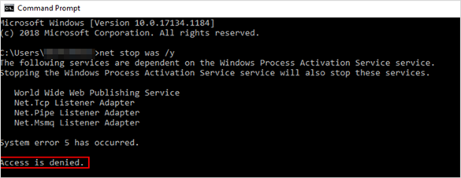
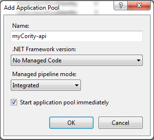
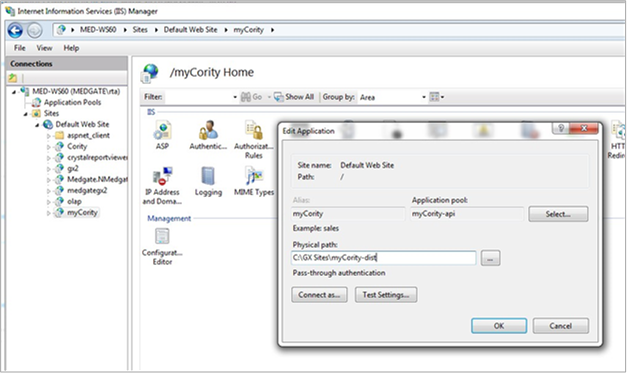

You may need to restart your computer once the installation is complete. If you can’t restart your computer, open a command prompt in administrator mode and type the following commands to stop and start IIS: net stop was /y net start w3svc
To access administrator mode, right-click the cmd.exe file and select Run as administrator.If you do not run the command in administrator mode, an “Access is denied” message will display:

Extract the myCority.zip file.
Copy the application to the web server. Only the “package” folder is needed. Ensure it is the root folder of the web server.
Under the root folder, there is an appsettings.json.sample file. Copy this file and rename it appsettings.json.
Create an application pool.


Create the application using the path of the package and application pool created in the previous step.
The “Execute” permission is needed in order for the site to load. If the site functionality does not work, or if no logs are generated upon loading the site, you may need to grant permissions to the application pool so it can read and create files in the folder directory. If you used ‘ApplicationPoolIdentity’ as the identity for the application pool, enter ‘IIS AppPool\’ followed by the application pool name you created (for example, ‘IIS AppPool\myCority-api’).
Click Check Names to ensure the application pool can be found.
Click OK.
If site functionality still does not work, there may be a problem with the web.config file. Some servers have a default web.config file, and this conflicts with myCority. The default web.config file is located at \web.config. The following may need to be removed from the file:
In the package\config folder, there is a file named ‘utils.config.sample’. The file contains a sample key. You must create a new ‘utils.config’ file with the actual key. Note: This key will be provided by Cority Support.
To recycle the web publishing service and IIS, open a command prompt as an administrator and enter the following commands:
net stop was /y
net start w3svc
iisreset
Locate the site’s root folder and create a new folder titled ‘Logs’. This is the folder where log will be created.
Open the “package\web.config” file change the “stdoutlogenabled” value to true from its default “false”.